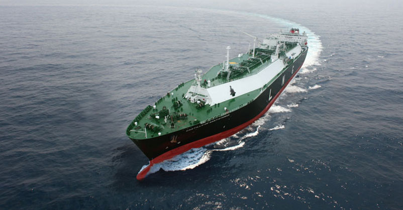
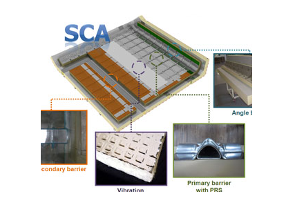

연구성과 10선
연구성과 10선
KAIST RESEARCH ACHIEVEMENTS
LNG선의 차세대
극저온 화물창 기술 개발
기계공학과 이대길
요약
세계 LNG선 시장 선도 기반 마련 이대길 교수 연구팀은 LNG선 화물창의 2차 방벽을 스테인리스 스틸(Stainless steel)과 알루미늄(Aluminum) 박판으로 구성한 후, 두 박판을 항공우주용 필름 접착제로 접합해 극저온에서도 높은 기밀성을 가진 화물창을 개발했다. 이는 40년 동안 사용해도 전혀 가스 누출이 없는 신뢰성 높은 화물창 건조기술을 세계 최초로 확립한 것이다.
연구내용
SCA 시스템은 충격 저감장치 및 압력지지 구조를 가지는 1차 방벽과 항공우주 기술을 적용한 2차 방벽이 적용돼 이미 해외로부터 그 기술을 인정받았다. 이는 완전한 기술 독립을 통해 국내 조선업계가 지불하는 막대한 기술 로열티로부터 벗어날 수 있음을 의미한 것이다. 또한 새로운 독자 모델의 기술 우위는 국내 조선 업계에게 세계 LNG선 시장을 선도할 수 있는 기반을 마련하는 한편, 관련 생산업계에 상당한 시너지 효과를 가져올 것으로 기대된다. 이번에 개발된 화물창 설계 기술과 국내 조선사들의 선박 건조 능력 및 생산 노하우와의 조합은 대한민국의 조선업이 ‘영원한 절대강자’라는 사실을 세계에 다시 한번 알릴 것으로 기대된다.

LNG선의 화물창은 -163℃의 LNG를 운항 도중 누설 없이 저장하기 위해 1, 2차방벽으로 구성된 이중 방벽 구조를 사용한다. 기존 GTT사의 MARK-III 시스템은 1차 방벽에 열 수축에 의한 응력을 줄이고자 주름부가 있는 스테인리스 스틸을 사용하고 2차 방벽은 복합재료로 구성된 방벽재료를 액상 에폭시 접착제를 이용해 구성했다. 하지만 1차 방벽은 운항도중 LNG의 유동에 의한 충격에 매우 취약한 구조를 가지고 있었으며, 2차 방벽은 방벽 재료(복합재료)의 누설 특성으로 인해 방벽으로서의 기능을 제대로 수행하지 못한다는 문제점이 있었다. 이에 이대길 교수 연구팀은 충격에 의한 파손을 억제하기 위해 세계 최초로 개발된VIL(Vibration Isolation Layer) 및 PRS(Pressure Resisting Structure) 구조를 1차 방벽에 적용했다. 연구팀은 여기에 복합재료에 비해 높은 밀폐성능을 갖는 스테인리스 스틸(Stainless steel)과 알루미늄(Aluminum) 박판 재료를 항공우주용 필름 접착제로 접착한 2차 방벽 시스템을 세계 최초로 개발했다. 이는 -163℃의 극저온에서도 기밀이 유지돼 그 신뢰성이 높다. 이렇게 개발된 극저온 화물창 시스템인 SCA(Smart Containment system-Advanced) 시스템은 해외 유명 선급 업체인 영국의 로이드(Lloyd's Register)와 미국의 ABS(American Bureau of Shipping)로부터 기술 인증을 획득했으며, 지난 2011년 9월에는 영국 런던에서 주요 선주 및 선급을 대상으로 공식 런칭 행사를 개최해 기술 설명회를 가지기도 했다. SCA 시스템을 통해 국내 조선 업계는 완전한 기술 독립을 이룰 수 있었으며 국내 조선 기술의 발전과 세계 LNG선 시장의 지속적인 비교 우위를 확보할 수 있게 됐다.
초극단파 펄스 레이저로 혈뇌장벽 열어(?)
 그림 2. 극저온 화물창(Cryogenic ContainmentSystem)의 내부구조
그림 2. 극저온 화물창(Cryogenic ContainmentSystem)의 내부구조

의미와 전망
최근 고유가와 일본 강진의 여파로 인해 LNG(Liquefied Natural Gas)의 수요가 크게 늘어나면서 LNG 운반선의 수요 또한 급증하고 있다. 이에 한국, 일본, 중국 등 3국은 전 세계 LNG 운반선 수주를 놓고 치열한 경쟁을 벌이고 있다. LNG선은 -163℃의 LNG를 저장 및 수송하도록 설계된 고부가가치 선박으로, 1척당 가격이 약 2,000억 원 이상이다. 그동안 삼성중공업, 현대중공업, 대우조선 등 국내 조선 3사는 높은 선박 건조 기술과 경쟁력을 바탕으로 세계 LNG선박 시장을 사실상 독점해 왔다. 하지만 LNG선박의 핵심 기술인 화물창 건조 기술은 프랑스의 GTT(GazTransport & Technigaz)사의 기술에 의존해 왔으며, 선박 가격의 5%에 달하는 기술 로열티를 지급해 왔다. 이에 KAIST와 삼성중공업은 지난 2007년 화물창 독자 기술 개발의 필요성을 인지하고 기존 시스템에 비해 높은 신뢰성을 갖는 새로운 화물창 시스템 개발을 시작했다.
연구비 지원
ㆍ4년간(2007년~현재) 삼성중공업으로부터 25억원의 연구비 지원
특허출원
ㆍ57건의 특허 출원
관련문헌
ㆍ해외 학술지에 23편 게재